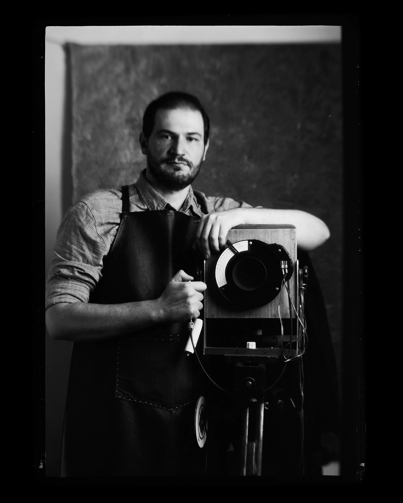

Exposure
Metering, working EI, tonal placement and reciprocity compensation.
Interest survey · First international group
A fully live online workshop on exposure, reversal processing and tonal control.
No payment now. This is not a confirmed registration.
01 / The workshop
This is not a prerecorded course and not a demonstration assembled after the fact. Camera operation, exposure decisions, chemistry and the physical transformation of the film will be presented live from the studio in Brazil.
The workshop is designed for photographers interested in sheet film, large format, handmade apparatus and alternative photographic processes. Its purpose is not to hand out a universal recipe, but to make the process understandable and controllable.
02 / Apparatus
The NINA is a handmade large-format camera developed for direct-positive work on X-ray film. Its body, shutter, focusing system and daylight processing logic belong to the same photographic chain.
The workshop is about making images, not building this camera. The apparatus appears because it makes the process visible.
03 / From exposure to positive
Metering, working EI, tonal placement and reciprocity compensation.
Time, temperature, movement and the formation of the final tonal scale.
Bleaching, clearing, re-exposure and second development.
Shadow density, midtone progression, highlights and process defects.
04 / Planned format
The first group will be deliberately limited. Every participant should have enough space to ask questions and discuss a real result.
Exposure and image formation; live processing; analysis of participants’ results.
A full group for the demonstrations, with structured time for questions and result analysis.
The workshop exists as a live encounter with the process, the objects and the participants.
The survey measures serious interest before dates and enrollment are opened.
05 / The photographer
Photographer and independent researcher working with handmade large-format cameras, direct-positive X-ray film and accessible photographic chemistry since 2018.
His practice is centered on the photographic image. Cameras, shutters, tanks and processing systems are developed as parts of a working chain that keeps exposure, chemistry and the final physical object under the photographer’s control.

06 / Interest survey
This form does not reserve a place and no payment is required. It will be used to define dates, time zones and the first international group.